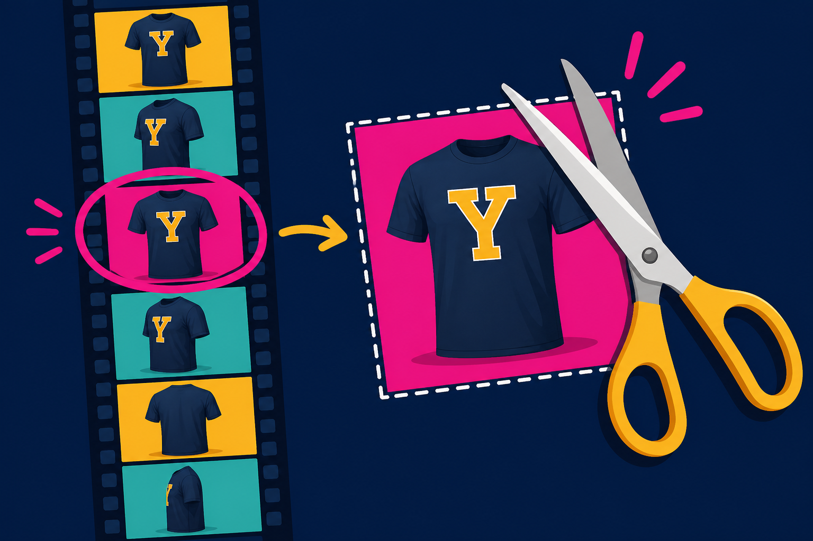

HW3 in one sentence: do not dump every frame into inventory search as step 1.
Why not send the whole movie?

30 fps
A 10s clip = 300 frames. Most are ceiling, thumb, or blur.
1 fps
Gemini’s default video sample rate. Fast motion still slips through.
‚â•5
HW3: save at least five frames (unless the clip is tiny).
Last class priced one still. Today the lever is which frames you send — not CLIP embeddings or tile formulas. Gemini video docs: default ~1 frame/second.
Speech carries size and color
Pixels show the graphic. Audio often carries the SKU fields vision cannot see: color and size.
HW3: transcribe ‚Üí query_text.json with transcript, requested_color, requested_size.
Whisper / OpenAI audio API. Empty string if they did not say it — do not invent “medium.”
Join the transcript to the crop before you finish. Ignore speech and you match the right shirt in the wrong size.
The crop has to be a file
If the crop only exists in the model’s imagination, graders cannot see it — and neither can you in an audit.
Shortlist, compare, refuse
Text search first
Crop description + spoken color/size ‚Üí rank the catalog. Keep ~5 SKUs. Words are cheap.
Vision-compare second
Crop vs those five product photos. Pick a SKU or none. Weak text list? Skip pixels. Finish not_in_inventory.
match
SKU found. Report sizes, colors, price. An associate can talk.
variant_oos
That’s our shirt. Not in the size/color they asked.
not_in_inventory
No catalog match. Do not mint a fake SKU because the model likes being helpful.
How video search fails
Symptom
Cause
Fix
Matches the wall poster
Best-frame picker liked high contrast, not the tee
Prompt: “garment on a person / hanger,” not “anything Yale”
Invented SKU
Vision-compare had no “none” option
Force vision_choice: none; status not_in_inventory
Right shirt, wrong size
Ignored transcript
Join audio fields before finish; use variant_oos
Surprise API bill
Sent 200 frames at high detail
Cap frames. Evidence is a file, not a movie dump.
Faces, dorm rooms, other shoppers — all in the same 8 seconds. Cloud vision = vendor DPA. Keep the crop + catalog photo + transcript snippet. Not the whole selfie.
Homework 3 map (do not solve it now)
P2–P3: vision catalog from product photos + ranked text search. That’s last lecture’s stills, now searchable.